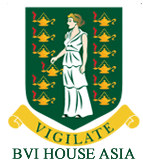
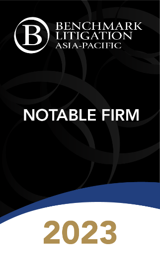

梁景威律师事务所是一所专业化的律师事务所，并在企业和商业领域内提供不同范畴的法律服务。我所擅长于国际航运、国际贸易、国际知识产权、以及企业重组和破产（清盘）的有关法律，在处理复杂的企业、商业和国际诉讼，国际商业和投资仲裁，以及企业重组活动上，我所拥有超过30年的丰富经验。
通过代理案件Dickson Valora Group (Holdings) Company Limited v Fan Ji Qian ([2019] 2 HKLRD 123) 以及 Dickson Holdings Enterprise Company Limited v Moravia CV ([2019] 3 HKLRD 210)，我司亦第一批应用了《关于内地与香港特别行政区法院就仲裁程序相互协助保全的安排》的律所之一。江苏省连云港市中级人民法院根据《互助安排》，成功协助香港国际仲裁中心在连云港市完成了价值超过2000万美元的跨境财产保全。
2001年，我所代表一家在中国浙江省温州市的民企信泰光学告倒香港怡和系集团公司，成功向其追讨其在无正本提单放货的情况下民企所蒙受的货物损失: 信泰光学(香港)有限公司-诉-怡和运输中国有限公司 (判决收集在世界有名的劳埃德案例集 [2001] 年第二册第678-690页)。
2005年，我所代表一香港货主告倒另一间国际有名的物流公司: 昌钻照相机有限公司-诉-普及物流有限公司 (判决收集在三本国际有名的案例集︰美国航运案例集 [2005] AMC 第2864 – 2879页；欧洲运输案倒集[2006]第XLI册No.2 第182 – 195页和香港案例集 [2005] 4HKC 第117 -135页)。
我所的始创人梁景威律师，在1988年成为英国伦敦见习律师的同时获颁发英国伦敦大学的法律硕士。同年，他回香港执业并在香港成为执业律师。在1992年，他获得香港大学颁发的工商管理硕士。在香港回归祖国中国之前和之后，他分别在1995年获得中国政法大学颁发的国际法学士学位和2002年中国北京大学颁发的经济法硕士学位。
梁景威律师是香港和星加坡仲裁司学会的资深会员，亦是香港国际仲裁中心和中国海事仲裁委员会的仲裁员名单内的仲裁员。
离岸法律服务 |
|||
|  |  |
 | |